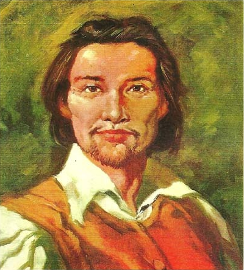

História do Maranhão
Os primeiros europeus a chegarem à área que hoje corresponde ao Estado do Maranhão foram os espanhóis, em 1500. Os portugueses tentaram retomar o território 35 anos depois, mas fracassaram. Em 1612, um grupo de 500 franceses munda a França Equinocial. ... Em 1612, a Coroa instituía o Estado do Maranhão e Grão-Pará.
Em 1612, Daniel de La Touche comandou uma missão francesa até a ilha de Upaon-Açu e tornou-se um dos fundadores do povoado da França Equinocial, chegando a construir o Fourt de Saint-Louis, nome dado em reverência ao rei de seu país. Neste momento, nascia a futura capital do Maranhão: cidade de São Luís.
Os portugueses decidiram reivindicar o território ocupado e expulsaram os franceses em 1615, sob comando de Jerônimo de Albuquerque Maranhão, que lutou ao lado de algumas tribos indígenas. O nome que deu origem ao estado tem relação com o Rio Marañón do Peru, que em linguagem tupi significa ‘mar’, ‘corrente’.
Gastronomia
Foram tantos os temperos e influências de europeus, índios, africanos e outros povos, que a culinária maranhense só poderia dar no que deu: uma conjunção exuberante, única, inigualável de sabores e receitas na medida para surpreender. Nessa mesa farta existe, é claro, um carro chefe. É o celebrado arroz de cuxá, que vai muito bem com frutos do mar e tem como principal ingrediente uma folha azedinha chamada vinagreira, além de camarão seco e gergelim.
O camarão grelhado preparado em Atins. E os sucos. E as iguarias como os doces de espécie típicos de Alcântara, receita à base de coco de herança portuguesa. E os doces cristalizados, em massa ou calda, à base de frutas regionais, como caju, buriti, bacuri, jaca e abacaxi.
Abacaxi que, no Maranhão, especificamente os da região de Turiaçu, município da pré-amazônia maranhense, é muito admirado pelo seu sabor e baixa acidez. Para quem visita o sul do Maranhão, o sabor fica por conta das carnes, com destaque para a carne de sol, que quando preparada com arroz, se transforma na deliciosa Maria Isabel. E, é claro, os churrascos.
Cultura
Num espetáculo de cores, danças e ritmos, o Bumba-Meu-Boi é a expressão máxima da cultura popular do Maranhão. Elevado a Patrimônio Imaterial do povo brasileiro, a manifestação tem origens indefinidas, mas elementos culturais africanos e europeus, introduzidos principalmente por meio da religiosidade, são evidentes. Nas comunidades que fazem a brincadeira, as celebrações e o trabalho em torno da festa duram praticamente o ano inteiro. Um dos desafios é preparar o couro do boi, revestimento de camurça belamente decorado com canutilhos que recobrem o corpo do animal, pois é de bom tom que este seja renovado a cada temporada. Mas é durante os festejos juninos que ele reina absoluto, arrastando multidões e encantando quem assiste pela primeira vez suas apresentações. No Bumba-Meu-Boi do Maranhão a variedade de sotaques, ou ritmos, faz a diferença.
No Maranhão, o período junino é marcado por muitos sons, cores e sabores. É o tempo de celebrar todas as ricas manifestações culturais maranhenses, com destaque para o Bumba-Meu-Boi. São Luís se transforma em um enorme arraial, são várias estruturas montadas em diferentes pontos da ilha, para apresentações culturais, danças típicas e cantores regionais, além das barracas de comida típica.
O Carnaval de São Luís é animado por diversas brincadeiras populares, uma verdadeira festa de cores , ritmos e diversão. Na folia, tomam conta das ruas, Fofões, Tribos de Índios, Casinha da Roça, Tambor de Crioula, Blocos Tradicionais e tambem escolas de samba. A festa acontece em toda a cidade, mas é no circuito Centro – São Pantaleão- Madre Deus, que a brincadeira é mais forte.
Gênero musical com origens jamaicanas, o reggae popularizou-se no Maranhão na década de 70, através dos programas de rádios caribenhas que eram ouvidas no Maranhão. Apresenta um ritmo dançante e suave, com uma batida bem característica e contagiante. Entre os adeptos ao movimento em São Luís e outras cidade do litoral maranhense, o Reggae Root’s é o de maior preferência, pois aqui é dançado em grupo através de coreografias ou agarradinho. Na capital, existem vários clubes de reggae e bares especializados prontos a receber novos e antigos amantes do ritmo.